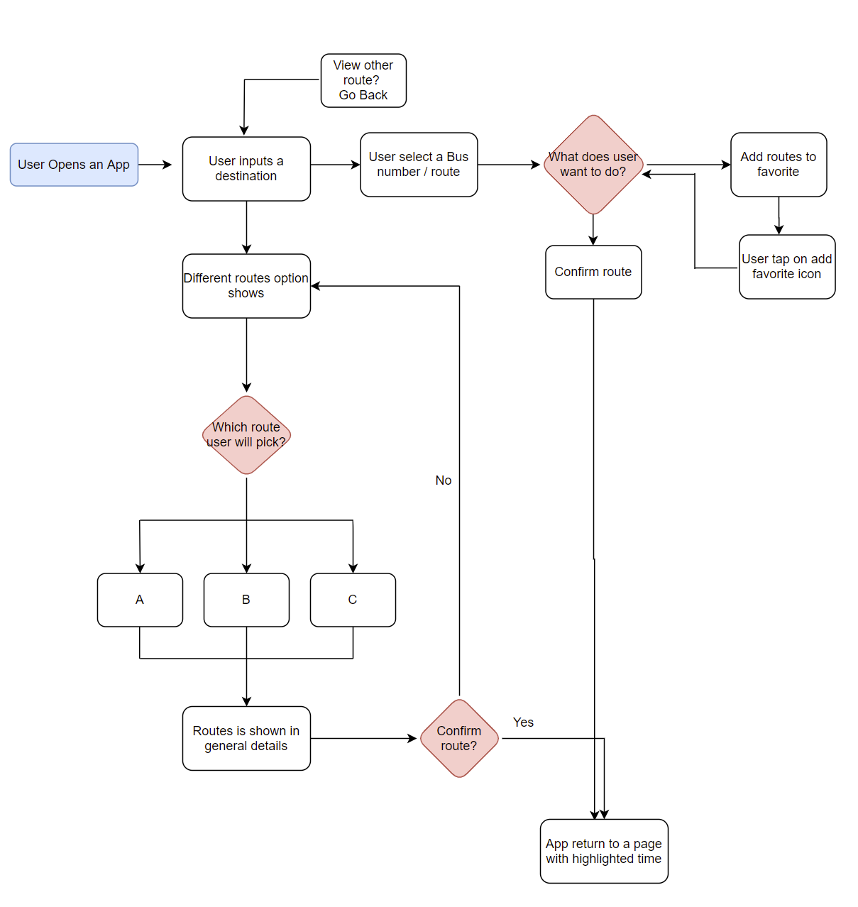

BusyBus
With BusyBus, plan your commute with peace of mind. You'll be alerted
when it's best to start walking to your nearest bus stop while also viewing
real-time updates. BusyBus provides real time bus updates,nearest
bus stops and available bus routes.
- Timeline
- 1 month
- Tools
- Figma
- Atom
- Git/Github
- Usabilityhub.com
- Role
- UX Researcher
- Visual Designer and
Front End Developer
- Themes
- User Research
- Interaction Design
- Visual Design
- Front End Developmet
Intro
Due to local redevelopment, numerous bus routes were recently added and many of those routes stop at the same bus stop.
Problem -- Riders find it inconvenient when they don’t know the arrival time of the bus. It’s important for a rider to know the bus and the arrival time so they don’t have to rush to the bus stop.
GOAL
Provide residents and commuters with a technological solution that enables a seamless and hassle-free public transportation experience.
Solution -- By combining basic design principles with an intuitive layout, BusyBus’ interface lets users know in real-time when their desired buses will arrive. Users will also be informed of which routes are inactive.
USER RESEARCH
A Day in the Life of a Rider
In order to better understand the User Problem I conducted a survey with 32 users.
INSIGHTS
1. Most people do not use the bus as their primary mode of transportation (81.3%), while 18.8% reported that they do.
2. Focusing primarily on bus riders, 50% use it daily while 50% use it a few times a week, mostly for getting to work.
KEY RESEARCH INSIGHT
Most riders walk no more than 5 minutes from their homes to their stops (83.3%), but time spent waiting for the bus varies; 16.7% spend 0-5 minutes, 66.7% spend 6-15 minutes, and 16.7% spend 16-30 minutes waiting. This is where improvements can and must be made; the graph shows what ways users' experience using public transportation apps can be enhanced.
USER NEEDS
1. Bus riders will benefit from having real-time updates so they know when to expect buses, and would like to track them in real-time (similar to how Lyft and Uber rides).
2. Users also wish to know when to begin heading to their stops, and be notified of any changes in the expected time of their bus. This will reduce wait times, diminishing a major pain point.
3. In the event of a signal failure, users would also like offline access to schedules and routes so they have some idea of when to begin moving. For added convenience, and because not all apps have this feature, an in-app payment option will attract more users in future.
COMPETITIVE ANALYSIS
Same Destination,Competing RoutesIn my user research, I learned that existing applications need more accurate details of the routes. I performed a competitive analysis of Google maps and Moovit . This gave me an opportunity to experience the extensive process first hand and helped me realize that simplicity of the user interface would be the guiding force for my product.
INFORMATION ARCHITECTURE
Mapping Our Own RouteBy taking competitors and user requirements into account, I measure success for BusyBus. I created a list of 12 user stories that were most important in establishing a minimum viable product,including being able to see real-time updates, notifications or approaching buses, and adding items to a 'Favorites' list. From this list, I created a user flow that integrated as much as possible to test out general functionality.
User Flow
WIREFRAMES AND TESTING
Going for a test driveUsing a templated worksheet, I sketched out three screens that adhere to my user and performed usability testing on this paper prototype with three subjects. I experimented with including other forms of transportation for users who may want to explore those options, similar to Google Maps and Moovit. I asked them to select and confirm a bus route. They each had varying levels of technological proficiency, allowing for broader perspectives on what could be improved.
KEY INSIGHTS
I noted the following points of feedback:1. When opening the app the destination input field was not obvious
2. Current bus locations were not available on map
3. Map and route did not appear for the whole journey

VISUAL DESIGN
Painting the BusWhen creating the visual prototype, I put a map on every screen based on user feedback. Some aspects of my sketches did not translate as well to the visual design as I anticipated, and thus the design underwent a second iteration.
Some points of feedback from other designers were as follows:
1. Add current location address so that user knows distance to destination
2. Add more weight to some of the text; it is difficult to read at 100% zoom
3. Highlight city at the top of the screen
4. Add 3 screens of hi - fi design hen show prototype
FRONTEND DEVELOPMENT
Up to CodeI wanted to see how well my design would translate into code. Using Atom, I coded the HTML and CSS for BusyBus' homepage. When looking back to my design in Figma. I felt it was unnecessary to add labels on the screen; they are self-explanatory. The route data was also restructured to display based on direction, with reroutes and out of service lines at the bottom of the list. I added a cap on the page width to see how everything would expand from mobile to larger displays.
View Code on Github
Next Steps
If I were to do this project again I would like to add more functionality including online payment and real time updates about trains and ferries. Also I would like to conduct more research for trains and ferries passengers to get a clearer idea of how many people use trains and ferries and their travel needs.
I think it would be important to build in a toggle between dark and light mode, giving riders more control of their viewing experience as well as continue experimenting with typography to see if there are better hierarchies I can apply.
Ultimately, BusyBus gives users accurate and real-time updates for local routes, assuaging any concerns they have about missing their bus.
Feedback on the design? Want to chat over coffee about my work? Find me on LinkedIn.